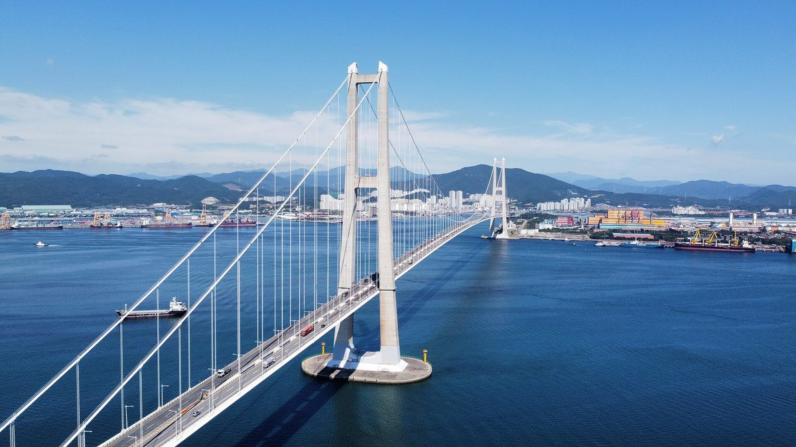

호남 재생에너지 계통 넓어진다…전남연구원, 여수·광양 산단 수요 연결과 주민 이익공유를 한 체계로 운영 제안

정부, 호남 수용능력 송전단 약 27GW·배전단 약 12GW 확대 전망…10월부터 기존 대기 사업자에 우선 배분, 신규 접속 신청은 2027년 1월부터
정부가 호남 지역 재생에너지 계통 수용능력을 넓히기로 하면서, 석유화학 산단이 모인 전남 여수에서 재생전력을 산단 수요와 잇고 발전 이익을 주민과 나누는 실행계획이 과제로 떠올랐다. 기후에너지환경부는 9월 29일 국무회의에 '전력망 혁신대책'을 보고하고, 2024년 9월부터 신규 재생에너지 접속이 막혀 온 호남에서 10월부터 계통관리변전소 지정을 풀어 확보한 여유용량을 기존 대기 사업자에게 먼저 나눠 주기로 했다. 신규 사업자의 접속 신청은 2027년 1월부터 받으며, 정부는 이번 대책으로 호남 수용능력이 송전단에서 약 27GW, 배전단에서 약 12GW 늘 것으로 내다봤다. 전남연구원 김준영·박미숙 연구위원은 10월 펴낸 'JNI 정책연구 제11호' 보고서에서 전남광주통합특별시 에너지 특례가 실효를 거두려면 발전 허가·계통 연계·지역 수요·주민 이익공유를 한 체계로 운영해야 한다며, 입지 주민의 기여와 부담을 배분 기준에 반영하고 실제 사업수익을 바탕으로 주민 환원과 지역 재투자를 늘리며 참여 대상·투자 방식·수익 배분·손실 부담·정보 공개 기준을 사업 초기에 정하라고 제안했다. 보고서는 여수·광양의 석유화학·철강을 청정전력과 수소의 대규모 수요처로 보고 기업별 전력 사용량과 재생에너지 구매 희망량·가격·도입 시기 조사부터 시작하자고 했으며, 성과도 허가 용량과 협약 건수에 더해 실제 발전량·접속 소요 기간·산단의 재생에너지 사용량·주민 환원 실적으로 따지자고 했다. 다만 호남 전체의 수용능력이 늘어도 개별 사업의 즉시 접속이 보장되는 것은 아니어서, 변전소·선로별 여건 확인과 보강 비용·일정 협의가 따로 필요하다.
시민에너지 관점
새로 열리는 계통을 누가 먼저 쓰느냐에 따라 호남의 재생에너지가 지역의 자산이 될지, 외지 자본의 수익원이 될지가 갈린다. 산단에 큰 전력을 대려면 대형 사업자가 효율적이라는 반론이 나올 수 있지만, 보고서 제안대로 주민 환원 실적을 성과 지표로 삼으려면 주민 지분이 처음부터 사업 구조 안에 들어가 있어야 한다. 주민이 보상금이나 나눠 받는 데 그치지 않고 발전소의 주인이 될 때 송전망 확충과 산단 전환에 대한 지역의 동의도 단단해진다. 여수시와 통합특별시는 2027년 1월 신규 접속 신청이 열리기 전에 주민·협동조합이 참여하는 사업을 따로 추려 우선 지원하는 기준부터 만들어야 한다.
출처: 뉴스탑전남 2026-10-22 마재일 원문 보기
湖南の再生可能エネルギー系統が拡大へ…全南研究院、麗水・光陽の産業団地需要との接続と住民の利益共有を一つの体系で運用するよう提案
政府、湖南の受け入れ能力が送電側約27GW・配電側約12GW増えると見通し…10月から既存の待機事業者に優先配分、新規接続申請は2027年1月から
政府が湖南地域の再生可能エネルギーの系統受け入れ能力を広げることを決めたことで、石油化学の産業団地が集まる全羅南道麗水では、再生可能エネルギーの電力を団地の需要と結び付け、発電の利益を住民と分かち合う実行計画が課題として浮上した。気候エネルギー環境部は9月29日の国務会議に「電力網革新対策」を報告し、2024年9月から新規の再生可能エネルギー接続が止まっていた湖南で、10月から系統管理変電所の指定を解除し、確保した余裕容量を既存の待機事業者に優先して配分することにした。新規事業者の接続申請は2027年1月から受け付け、政府はこの対策で湖南の受け入れ能力が送電側で約27GW、配電側で約12GW増えると見込んでいる。全南研究院のキム・ジュニョン、パク・ミスク両研究委員は10月に発行した「JNI政策研究第11号」の報告書で、全南光州統合特別市のエネルギー特例が実効性を持つには、発電許可・系統連系・地域需要・住民の利益共有を一つの体系で運用すべきだとし、立地住民の貢献と負担を配分基準に反映すること、実際の事業収益に基づいて住民還元と地域再投資を増やすこと、参加対象・投資方式・収益配分・損失負担・情報公開の基準を事業の初期に決めることを提案した。報告書は麗水・光陽の石油化学・鉄鋼をクリーン電力と水素の大規模な需要先とみて、企業ごとの電力使用量や再生可能エネルギーの購入希望量・価格・導入時期の調査から始めるべきだとし、成果も許可容量や協約件数に加え、実際の発電量・接続にかかる期間・団地の再生可能エネルギー使用量・住民還元の実績で測るよう求めた。ただし湖南全体の受け入れ能力が増えても個別事業の即時接続が保証されるわけではなく、変電所・線路ごとの条件確認と、補強の費用・日程の協議が別途必要となる。
市民エネルギーの視点
新たに開かれる系統を誰が先に使うかによって、湖南の再生可能エネルギーが地域の資産になるのか、外部資本の収益源になるのかが分かれる。団地に大きな電力を供給するには大規模事業者が効率的だという反論もありうるが、報告書の提案どおり住民還元の実績を成果指標にするのであれば、住民の持ち分が最初から事業の構造に組み込まれていなければならない。住民が補償金を受け取るだけにとどまらず発電所の持ち主になってこそ、送電網の拡充や団地の転換に対する地域の合意も強固になる。麗水市と統合特別市は、2027年1月に新規接続申請が始まる前に、住民や協同組合が参加する事業を別に選び出して優先的に支援する基準からつくるべきだ。
出典: Newstop Jeonnam 2026-10-22 Ma Jae-il 原文を読む
湖南可再生能源电网容量将扩大…全南研究院建议把丽水和光阳产业园区需求对接与居民利益共享纳入同一体系运作
政府预计湖南接纳能力输电端增加约27GW、配电端增加约12GW…10月起优先分配给已在排队的项目，新项目并网申请自2027年1月起受理
随着韩国政府决定扩大湖南地区可再生能源的电网接纳能力，在石化产业园区集中的全罗南道丽水，如何把可再生电力与园区需求对接、并与居民分享发电收益的实施计划成为新的课题。气候能源环境部9月29日向国务会议报告了“电网创新对策”，决定自10月起在2024年9月以来新可再生能源项目无法并网的湖南地区解除电网管理变电站的指定，并把腾出的富余容量优先分配给已在排队的项目。新项目的并网申请将从2027年1月起受理，政府预计这一对策将使湖南的接纳能力在输电端增加约27GW、在配电端增加约12GW。全南研究院研究委员Kim Jun-young和Park Mi-suk在10月发布的《JNI政策研究第11号》报告中提出，全南光州统合特别市的能源特例要取得实效，就应把发电许可、并网、地方需求和居民利益共享纳入同一体系运作；报告建议在分配标准中反映选址地居民的贡献与负担，以实际项目收益为基础扩大对居民的回馈和地方再投资，并在项目初期就确定参与对象、投资方式、收益分配、亏损分担和信息公开的标准。报告把丽水和光阳的石化、钢铁产业视为清洁电力和氢能的大规模需求方，主张先从调查各企业的用电量以及可再生能源的意向采购量、价格和引进时间入手；在成果评估上，除许可容量和协议数量外，还应看实际发电量、并网所需时间、园区可再生能源使用量和居民回馈实绩。不过，即使湖南整体接纳能力提高，也并不保证单个项目能立即并网，仍需另行确认各变电站和线路的条件，并协商加固工程的费用与进度。
市民能源视角
新开放的电网容量由谁先使用，决定了湖南的可再生能源会成为地方的资产，还是外来资本的利润来源。或许有人认为，要向园区供应大量电力，大型企业效率更高；但如果像报告建议的那样把居民回馈实绩作为成果指标，居民股份就必须从一开始就写进项目结构。只有居民不止于领取补偿金，而是成为电站的主人，地方对扩建输电网和园区转型的认同才会更加牢固。丽水市和统合特别市应在2027年1月新项目并网申请开放之前，首先制定标准，单独遴选居民和合作社参与的项目并优先给予支持。
来源: Newstop Jeonnam 2026-10-22 Ma Jae-il 查看原文
Honam grid opens up to more renewables; Jeonnam Research Institute proposes linking Yeosu and Gwangyang industrial demand and resident benefit-sharing in one system
Government expects Honam's hosting capacity to grow by about 27 GW on the transmission side and 12 GW on the distribution side; spare capacity goes first to queued projects from October, with new connection applications from January 2027
With the government deciding to expand the grid's capacity to take renewable power in the Honam region, the petrochemical hub of Yeosu in South Jeolla Province now faces the task of drawing up plans to connect renewable electricity to industrial demand and share the benefits of generation with residents. The Ministry of Climate, Energy and Environment reported a "power grid innovation plan" to the cabinet on September 29, under which Honam, where new renewable projects have been barred from connecting since September 2024, had its grid-managed substation designations lifted from October, with the freed-up capacity going first to projects already waiting in the queue. Applications from new projects will be accepted from January 2027, and the government expects the measures to raise Honam's hosting capacity by about 27 GW on the transmission side and about 12 GW on the distribution side. In a report published in October as JNI Policy Research No. 11, Jeonnam Research Institute fellows Kim Jun-young and Park Mi-suk said that for the energy special provisions of the planned Jeonnam-Gwangju integrated special city to work, generation permits, grid connection, local demand and benefit-sharing with residents must be run as a single system; they proposed reflecting host residents' contributions and burdens in allocation criteria, expanding returns to residents and local reinvestment based on actual project revenue, and fixing at the outset who can take part, how they invest, how revenue is split, who bears losses and what is disclosed. The report sees the petrochemical and steel industries of Yeosu and Gwangyang as large buyers of clean power and hydrogen, suggests starting with a survey of each company's power use and the volume, price and timing of renewable power it wants to buy, and says success should be measured not only by permitted capacity and the number of agreements but also by actual generation, time taken to connect, renewable power used in the industrial complexes and returns delivered to residents. Higher capacity across Honam does not, however, guarantee any single project an immediate connection, and conditions at each substation and line, as well as the cost and timing of reinforcements, still have to be worked out separately.
Citizen Energy View
Who gets to use the newly opened grid capacity first will decide whether Honam's renewable energy becomes a local asset or a revenue stream for outside capital. Some may argue that large developers are more efficient at supplying big industrial loads, but if returns to residents are to be a performance indicator, as the report proposes, resident equity has to be built into project structures from the start. Local consent to grid expansion and industrial transition grows stronger when residents become owners of power plants rather than mere recipients of compensation. Before new connection applications open in January 2027, Yeosu and the integrated special city should first set criteria to single out and prioritise projects in which residents and cooperatives take part.
Source: Newstop Jeonnam 2026-10-22 Ma Jae-il Read the original